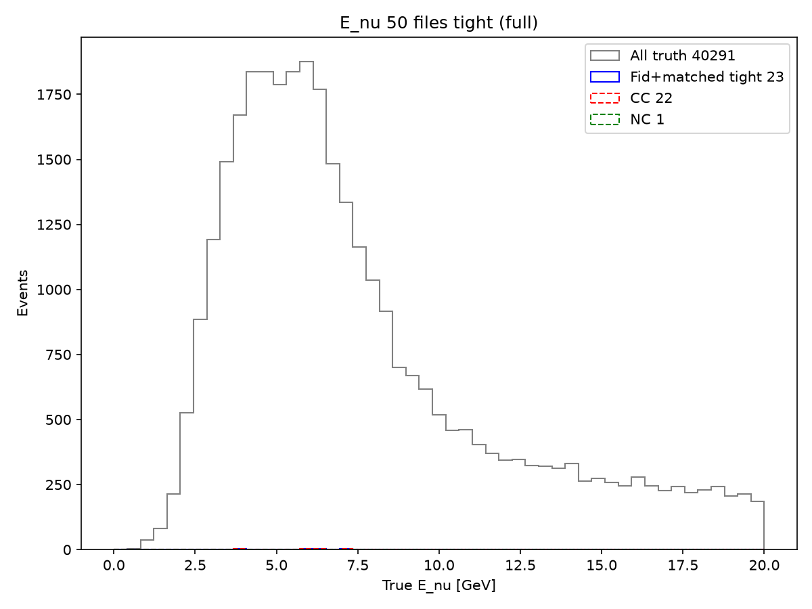
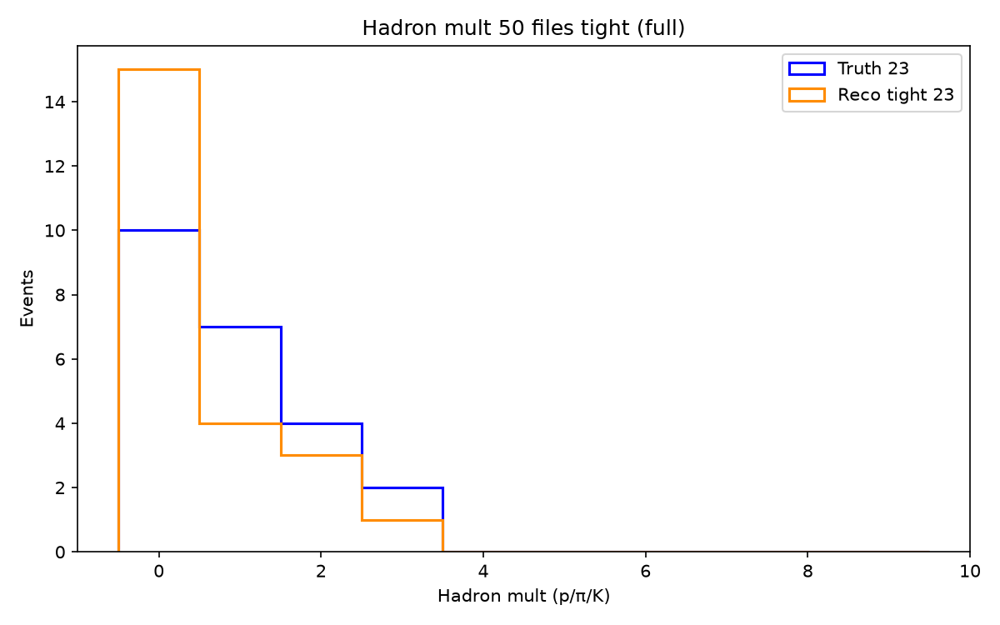
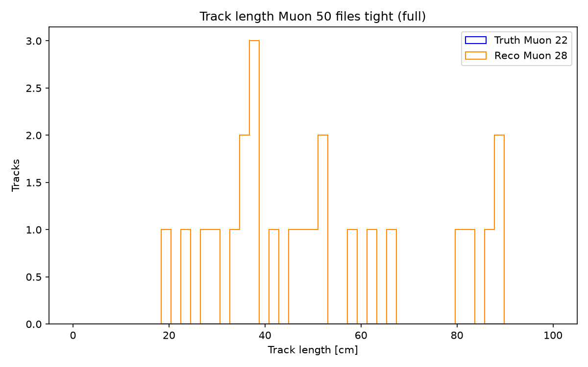
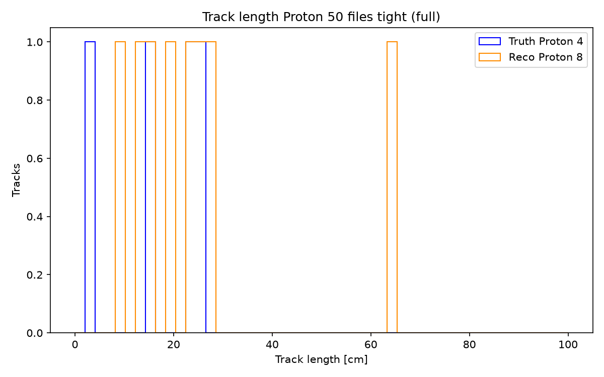
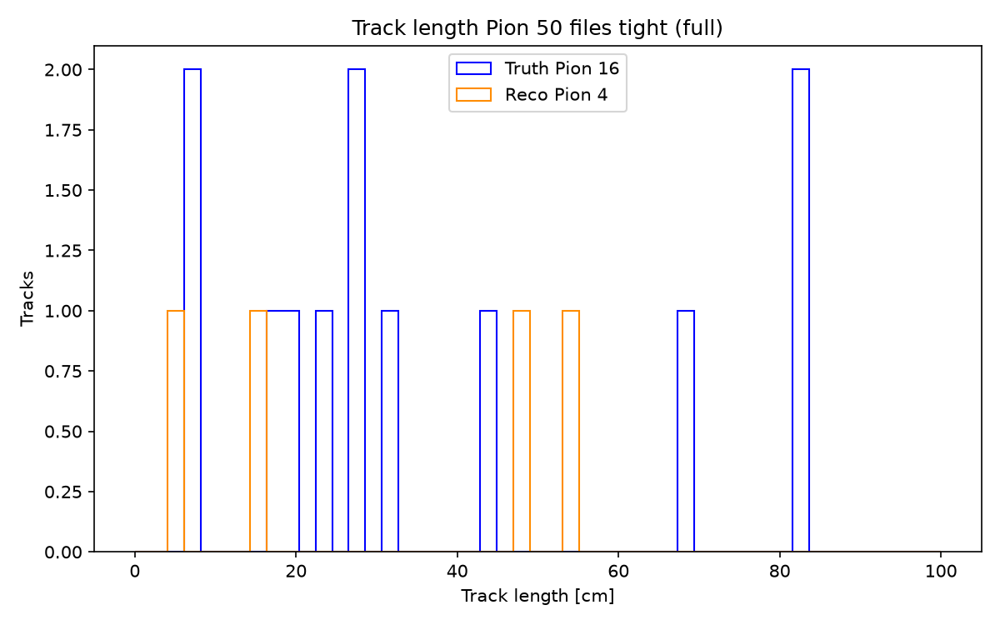
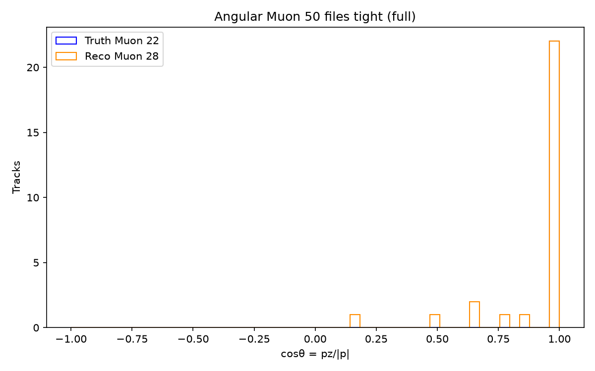

Run the verified tight analysis yourself on Polaris — 50 or 1000 files, no assistant needed. All env, code, and plots live under WORK=/home/zdjurcic/2x2 and /lus/eagle/.../caf_MC/
| Where | What | Size |
|---|---|---|
| /home/zdjurcic/2x2/root_env | Conda env with ROOT 6.40.04 + Python 3.11 + matplotlib (676 MB download, built once via conda create -p $WORK/root_env -c conda-forge root) | ~2.1 GB installed |
| /home/zdjurcic/2x2/deps/duneanaobj/install/lib/libduneanaobj_StandardRecord.so | Polaris-native dict built via rootcling + g++ for ROOT 6.40.04 (1.1M, not the laptop 6.32 lib) | 1.1 MB |
| $WORK/polaris_setup/env_polaris.sh | Sets WORK, CONDA_PKGS_DIRS, LD_LIBRARY_PATH, proxy — source it every login/job | 1.3 KB |
| /home/zdjurcic/polaris_full/ | Deck you staged from laptop: download_cafs.sh, run_50_full.py, run_1000_full.py, run_50_tight_fixed.py | ~50 KB |
| /lus/eagle/clone/g2/projects/Nu_Novel/alcf_training/zdjurcic/caf_MC/0000000/ | 1000 CAFs (1.8 GB, 1000 files) already downloaded via curl through proxy.alcf.anl.gov:3128 | 1.8 GB |
| /lus/eagle/.../plots_50_full/ & plots_full_1000/ | 13 PNGs each: Enu, vertex X/Y/Z, mode, nprim, hadron_mult, length μ/p/π, angular μ/p/π + cutflow_*.json | ~400 KB / 800 KB |
# On Polaris login node as zdjurcic
export WORK=/home/zdjurcic/2x2
mkdir -p $WORK && cd $WORK
export APPTAINER_CACHEDIR=$WORK/.apptainer_cache
export APPTAINER_TMPDIR=$WORK/.apptainer_tmp
mkdir -p $APPTAINER_CACHEDIR $APPTAINER_TMPDIR
module load conda
export CONDA_PKGS_DIRS=$WORK/conda_pkgs
conda config --set proxy_servers.http http://proxy.alcf.anl.gov:3128
conda config --set proxy_servers.https http://proxy.alcf.anl.gov:3128
conda create -p $WORK/root_env -c conda-forge root python=3.11 matplotlib -y
conda activate $WORK/root_env
python -c "import ROOT; print(ROOT.gROOT.GetVersion())" # → 6.40.04
root -l -b -q -e 'printf("ROOT %s\n", gROOT->GetVersion());'
conda clean --all -y
# Clone duneanaobj and build dict for Polaris ROOT
mkdir -p $WORK/deps/duneanaobj
git clone --branch v03_06_01 --depth 1 https://github.com/DUNE/duneanaobj.git $WORK/deps/duneanaobj/src
cp $WORK/polaris_setup/deps $WORK/ 2>&1 | head # if not already
cp $WORK/polaris_setup/{Makefile,purity_dlp_multiplicity.cc,env_polaris.sh} $WORK/
mkdir -p $WORK/deps/duneanaobj/build $WORK/deps/duneanaobj/install
cd $WORK/deps/duneanaobj/build
module load cmake/3.27.7 # or use rootcling direct build (no cetmodules):
# Option A (recommended for Python): rootcling direct
cd /tmp && cp $HOME/polaris_full/deps/duneanaobj/LinkDef_full.h ./LinkDef.h
cp -r $WORK/deps/duneanaobj/src ./src
rootcling -f G__StandardRecord.cxx -c -p -I src src/duneanaobj/StandardRecord/StandardRecord.h LinkDef.h
g++ -fPIC -shared -o $WORK/deps/duneanaobj/install/lib/libduneanaobj_StandardRecord.so G__StandardRecord.cxx src/duneanaobj/StandardRecord/*.cxx -I src $(root-config --cflags --libs)
ls -lh $WORK/deps/duneanaobj/install/lib/libduneanaobj_StandardRecord.so
You do this once. Every future login/job just does source $WORK/polaris_setup/env_polaris.sh && conda activate $WORK/root_env
module use /soft/modulefiles
module use /soft/spack/gcc/0.6.1/install/modulefiles/Core
module load conda
export WORK=/home/zdjurcic/2x2
source $WORK/polaris_setup/env_polaris.sh
conda activate $WORK/root_env
# Now you have:
which root # → $WORK/root_env/bin/root
root-config --version # → 6.40.04
python -c "import ROOT, matplotlib; print('ready')"
| Step | Cut | Ref |
|---|---|---|
| Fiducial | 5<|x|<59, 5<|z|<59.5, |y|<57 on ixn.vtx | nominal_mc.cc L2461 |
| Track | primary && |start-vtx|<5 && |end-start|>3 cm for pdg 13/2212/211/321 | L2573/2598 |
| MINERvA tight | Exiting |z|>58 → start_z>0 && z>60, loop nd.minerva.ixn, lenMin>10, dot>prev && |ΔY|<15 && |ΔX|<15 && |Δatan|<0.06, pass maxDot>0.99 | L2625-2785 |
| Truth match | truth/truthOverlap argmax → mc.nu[best], |Δvtx|<5, targetPDG==Ar | L2474 |
Change any threshold at the top of run_50_full.py (e.g. minTrkLength=3.0, 5,59,59.5,57, 0.99/15/0.06) and resubmit — no rebuild needed.
# From Polaris login node qsub -q debug -l walltime=00:30:00 -l select=1 -A Nu_Novel -o $HOME/run_50.out -e $HOME/run_50.err << 'QSUB' #!/bin/bash source $HOME/2x2/polaris_setup/env_polaris.sh conda activate $HOME/2x2/root_env python -u $HOME/polaris_full/run_50_full.py ls -lh /lus/eagle/clone/g2/projects/Nu_Novel/alcf_training/zdjurcic/caf_MC/plots_50_full/ cat /lus/eagle/.../plots_50_full/cutflow_50_full.json QSUB # Or via IRI API (what we used): python -c "from alcf_tools.iri import submit_job; submit_job(system='polaris', commands='source \$HOME/2x2/polaris_setup/env_polaris.sh && conda activate \$HOME/2x2/root_env && python -u \$HOME/polaris_full/run_50_full.py', stdout_path='/home/zdjurcic/run_50.out', nodes=1, queue='debug', account='Nu_Novel', walltime_sec=1800)"
qsub -q debug -l walltime=01:00:00 -l select=1 -A Nu_Novel -o $HOME/run_1000.out -e $HOME/run_1000.err << 'QSUB' #!/bin/bash source $HOME/2x2/polaris_setup/env_polaris.sh conda activate $HOME/2x2/root_env python -u $HOME/polaris_full/run_1000_full.py ls -lh /lus/eagle/clone/g2/projects/Nu_Novel/alcf_training/zdjurcic/caf_MC/plots_full_1000/ QSUB
ls -lh /lus/eagle/clone/g2/projects/Nu_Novel/alcf_training/zdjurcic/caf_MC/plots_50_full/ # 13 PNGs + cutflow_50_full.json cat /lus/eagle/.../plots_50_full/cutflow_50_full.json # 50 files: 9925 spills → 3670 fiducial → 1482 track → 26 tight → 23 matched (22 CC) # 1000 files: 198460 spills → 72951 fiducial → 29267 track → 532 tight → 499 matched (488 CC/11 NC)
# On laptop with Globus Connect Personal running: # Tar on Polaris: tar -czf $HOME/plots_50_full.tar.gz -C /lus/eagle/.../caf_MC plots_50_full # Transfer home → local (GCP ID c83fd5dc-deeb-11f1-9c8b-02ffe3faed53): # Use globus transfer: ALCF home (6115bd2c-957a-4543-abff-5fae52992ff2) → your laptop # Or via alcf_tools: stage_to_alcf in reverse (see PROMPTS.md) tar -xzf plots_50_full.tar.gz -C 05_Agentic_Workflows/caf_analysis_code/polaris_full/
All scripts are in /home/zdjurcic/polaris_full/ and mirrored to 05_Agentic_Workflows/caf_analysis_code/polaris_full/ + nu_analysis/2x2_mc_polaris/ for GitHub.






Full 13-plot set is in plots_50_full/ on Eagle and local polaris_full/plots_50_full/
Copy run_1000_full.py to 2x2_data/, set mnvOffsetX=-10 Y=5 for data (L1989), point EAGLE to data CAFs, and submit the same qsub — no new env needed.
See PROMPTS.md for the exact prompts to ask a model to recreate this whole Polaris setup from scratch.